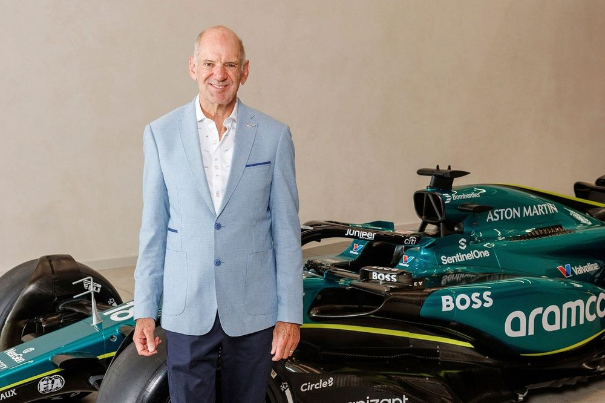

Informations Pilotes
Lewis Hamilton
La dernière course de la saison a Abu Dhabi sera la dernière
course de plusieurs
pilotes dans leurs présente écurie. C'est le cas de Lewis Hamilton qui fera son
départ pour Ferrari l'an prochain. Lewis Hamilton, l'une des figures les plus
emblématiques de la Formule 1, a choqué le monde du sport automobile en annonçant
son transfert vers Ferrari, après avoir passé une grande partie de sa carrière chez
Mercedes. Ce changement marque un tournant majeur dans sa carrière, offrant à
Hamilton une nouvelle opportunité de rivaliser pour les titres mondiaux dans une
équipe légendaire. Avec Ferrari, il espère apporter son expérience et ses
compétences acquises au fil des années, et revendiquer un nouveau défi après une
longue période de domination avec Mercedes.
Adrian Newey
Adrian Newey, l'un des ingénieurs les plus talentueux et respectés
de l'histoire de la Formule 1, a provoqué une onde de choc dans le monde du sport
automobile en annonçant son transfert vers Aston Martin. Après avoir passé de
nombreuses années chez Red Bull Racing, où il a conçu des voitures qui ont dominé la
scène de la F1, Newey rejoint Aston Martin avec l'ambition de relever un nouveau
défi. Ce changement de cap offre à l'équipe britannique une opportunité de
bénéficier du génie technique de Newey, connu pour ses conceptions novatrices et sa
capacité à tirer le meilleur parti des règlements techniques. Pour Aston Martin,
c'est un coup de maître qui pourrait permettre à l'équipe de réduire l'écart avec
les écuries les plus puissantes et de se rapprocher des premières places. Ce
transfert marque un moment stratégique clé dans la quête de l'équipe pour retrouver
le succès en Formule 1 et établir une nouvelle ère de compétitivité.

Sergio Pérez
La saison 2024 de Sergio Pérez chez Red Bull se révèle être un
véritable fiasco, marquée par des performances décevantes et une incapacité à
rivaliser de manière constante avec son coéquipier Max Verstappen. Après plusieurs
saisons où il a eu du mal à se maintenir au même niveau que le champion néerlandais,
Pérez semble avoir franchi un nouveau seuil en 2024, avec des résultats bien en dessou
des attentes. Ses performances en qualification sont souvent médiocres, et ses
courses sont entachées d'erreurs ou de mauvais choix stratégiques, ce qui fragilise
sa position au sein de l'équipe. Dans ce contexte, sa place chez Red Bull est de
plus en plus menacée. l'équipe, habituée à l'excellence, n'hésitera pas à chercher
un remplaçant si Pérez ne parvient pas à inverser la tendance. De plus, avec
l'ascension d'autres pilotes talentueux, la pression sur Pérez ne cesse d'augmenter.
À ce rythme, ses chances de conserver son volant pour la saison suivante semblent
minces, et son avenir au sein de chez Red Bull pourrait être en jeu.